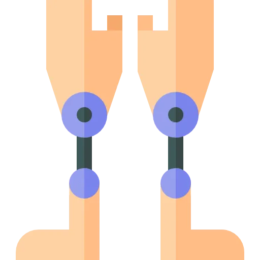

One decision the whole exam hangs on, two post-op emergencies you cannot miss, and how to read a weight-bearing order the answer depends on.
This topic is not hard to understand. It is easy to answer wrong under pressure. The points leak out in three predictable places.
Read these before anything else.
There is no single list. The precautions depend on the surgical approach. A posterior approach forbids flexion past 90 degrees, adduction past midline, and internal rotation, and it uses an abduction pillow. An anterior approach restricts extension and external rotation instead. Memorize one list and the question that names the other approach eats your point.
Two things can kill this patient. The first is dislocation: sudden pain, a shortened externally rotated leg, a lump you can feel, loss of function. The second is venous thromboembolism, a DVT that throws a PE. Miss either and the vignette is not a comfort question anymore.
The safe answer often depends on it. WBAT, TTWB, PWB and NWB each permit a different thing. So does the mobility plan and the block. If you walk a patient without knowing what they are cleared for, you guessed.
Four decision points carry this whole topic. For each one you should be able to say the rule, the clue, the priority action, and the teaching point. Say them with the book closed.
If you cannot, you do not know it yet. Familiarity is not recall.
| Decision point | The rule or goal | The clue in the scenario | Priority action | Teaching point |
|---|---|---|---|---|
| Hip precautions | Posterior: no flexion past 90 degrees, no crossing midline, no internal rotation. | Which approach the operative report names. | Match the precautions to the approach, not to memory. | Abduction pillow, raised toilet seat, reachers and a sock aid. |
| DVT prevention | Anticoagulant plus SCDs plus early walking. | A warm, swollen, tender calf on one side. | Notify, hold ambulation, expect a duplex ultrasound. | Keep the SCDs on, confirm the blood thinner, get them up. |
| Dislocation | Catch it fast; it is an emergency. | Sudden pain, a shortened externally rotated leg, a lump, loss of function. | Immobilize as found, do not reduce it, call the surgeon. | You never realign a prosthetic hip yourself. |
| Mobility | Up on the day of surgery or day one. | The weight-bearing order and the nerve block. | Pre-medicate, dangle, then walk with a walker. | Walker first; good leg up, operative leg down. |
Write these four rows on one index card, by hand. Approach sets the precautions. A one-sided warm calf is a clot. A shortened rotated leg is a dislocation. The order tells you how to walk them. That card is most of the exam.
Discrimination axis: which side was cut, posterior or anterior.
Hip precautions are movement limits that protect the healing capsule. They prevent the ball from leaving the socket. They run for about 6 to 12 weeks. The approach decides which movements are dangerous.
Protects: the posterior capsule that was opened.
Protects: the anterior capsule that was opened.
| Activity | Safe technique |
|---|---|
| Sitting | Firm, elevated chair. Hips higher than knees. Do not lean forward. |
| Toileting | Raised toilet seat, adds 4 to 6 inches. Do not lean forward to wipe. |
| Sleeping | On the back or non-operative side. Abduction pillow between the legs. |
| Dressing | Reacher, long-handled shoehorn, sock aid. Operative leg dressed first, undressed last. |
| Bathing | Shower chair, long-handled sponge. No tub baths until cleared. |
| Transfers | Pivot on the non-operative leg. Keep the operative leg extended. Do not twist. |
Sudden severe hip or groin pain. The leg looks shortened and externally rotated. There may be a lump. The patient cannot bear weight or move the leg.
This is an emergency. Keep the patient still. Do not try to reduce it. Notify the surgeon.
Joint replacement is one of the highest-risk surgeries for a clot. A DVT can throw a PE, and PE is the leading cause of death after these operations. Prophylaxis is not optional.
| Drug | Dose | Duration | What you watch |
|---|---|---|---|
| Enoxaparin | 40 mg SQ daily, or 30 mg SQ every 12 hours | 10 to 35 days | Teach self-injection, rotate sites, bleeding. |
| Rivaroxaban | 10 mg PO daily | 12 days knee, 35 days hip | Give with food. No routine monitoring. |
| Apixaban | 2.5 mg PO twice daily | 12 days knee, 35 days hip | No routine monitoring. Renal dosing. |
| Aspirin | 81 to 325 mg PO daily | 35 days | Low bleeding risk, used in lower-risk patients. |
| Warfarin | Adjusted to INR 2 to 3 | 10 to 35 days | INR monitoring, diet teaching. |
Suspect a DVT when one leg is warm, swollen, tender, and heavy. A calf more than 3 cm larger than the other side is a red flag. Do not walk this patient. Bed rest until it is ruled out or treated.
Homans sign is unreliable, skip it. D-dimer rises after any surgery, so it does not confirm much here. The duplex ultrasound is the definitive test.
Sudden dyspnea. Pleuritic chest pain. Tachypnea and tachycardia. Falling oxygen. Anxiety, maybe a cough. This is an emergency.
Sit them up, put on high-flow oxygen, call a rapid response. Do not start diagnostics or dose heparin on your own first. CT pulmonary angiography confirms it after you stabilize.
These surgeries usually go well. The exam lives in the ones that do not. Learn to name each complication from its signs.
Do: immobilize as found, do not reduce, call the surgeon. Reduction is done under sedation.
Do: antibiotics, sometimes revision or implant removal. It may be early, under 3 months, or late.
Do: prevent it, then treat fast. Oxygen and rapid response for a PE.
Do: assess often, report a new deficit. Numbness or a lost pulse is not normal.
When: usually the first days after long-bone or joint surgery.
Do: fixation or revision surgery, or a shoe lift for a length difference.
The prosthesis is a permanent foreign body. Bacteria can seed it through the blood for life, so the risk never ends. Before invasive dental work, the patient takes amoxicillin 2 g by mouth 1 hour ahead, or clindamycin if penicillin-allergic.
Post-op care is pain control, watching for complications, and getting the patient moving. Many go home in a day or two. Order your assessments; do the highest-stakes ones first.
Multimodal means several drug classes hitting different pathways. It controls pain with fewer opioid side effects, so less nausea, constipation and respiratory depression. Schedule the non-opioids around the clock. Save opioids for breakthrough.
| Layer | What it is | Watch for |
|---|---|---|
| Regional | Nerve blocks (femoral, adductor canal), spinal with intrathecal morphine, local infiltration; 12 to 24 hours | Motor weakness and fall risk. |
| Scheduled | Acetaminophen 1 g every 6 to 8 hours, NSAIDs, gabapentin or pregabalin | Give around the clock. |
| Breakthrough | Opioids as needed, muscle relaxants PRN | Sedation, constipation, breathing. |
| Non-drug | Ice 20 minutes on and off, elevation, positioning, distraction | Protect the skin from cold. |
The weight-bearing order shapes every transfer. Cemented joints usually allow immediate weight; cementless ones may be restricted while bone grows in. For a knee, a CPM machine may start at 30 to 40 degrees and advance toward 90. It does not replace physical therapy.
Delegation matters here. Assessment, teaching, and evaluation stay with the RN. A UAP can help with meals, hygiene and mobility once you have assessed and given clear precautions.
WBAT: full weight as tolerated, common for cemented joints. TTWB: toe touches for balance only. PWB: a set percentage, often 50 percent. NWB: no weight at all, rare here. Confirm the order before you stand the patient.
Early movement drives recovery. Physical therapy usually starts the day of surgery or day one, then continues for 6 to 12 weeks. Priority questions here are about the safe order of a first walk.
| When | What happens |
|---|---|
| Day 0 | Ankle pumps, quad sets, gluteal sets. Dangle. Knee CPM may start at 30 to 40 degrees. |
| Day 1 | First ambulation with a walker. Transfer bed to chair. Weight-bearing as ordered. |
| Day 2 | Walk 100 or more feet. Practice stairs if going home. Discharge or rehab. |
| Weeks 2 to 6 | Progress to a cane, then no device. Drive when off narcotics, about 2 to 4 weeks. |
| 3 to 6 months | Return to most activity. Precautions usually stop at 6 to 12 weeks. |
On stairs: good leg up, operative leg down. Say it as good up, bad down. For a knee replacement, aim for 90 degrees of flexion by discharge and about 120 degrees by 3 months. Ninety degrees is what stairs and a car seat need.
These should be automatic. Each one changes what you do. If you have to reason toward it, it is not learned yet.
| Number | What you do with it |
|---|---|
| 90 degrees | The most you flex a posterior-approach hip; past it, dislocation |
| WBAT | Full weight as tolerated; standard for cemented joints |
| TTWB | Toe touches for balance only, no weight through the leg |
| PWB | A set percentage of body weight, often 50 percent |
| NWB | No weight on the operative leg at all |
| 6 to 12 weeks | How long hip precautions stay in force |
| 3 cm | Calf bigger than the other side; suspect DVT, notify, hold walking |
| 90 degrees | Knee flexion you want before a TKA goes home |
| INR 2 to 3 | The warfarin target you monitor toward |
| Amoxicillin 2 g | By mouth 1 hour before invasive dental work, for life |
| 30 to 40 degrees | Where a knee CPM starts before advancing toward 90 |
Write these on the back of the index card from section 02. Test yourself on the action, not the value. The exam gives you the number and asks what you do.
Rereading this will not move your score. Producing it will. Everything below is done with the page shut.
Pick the posterior hip. Without looking, say the three precautions, the dislocation signs, and the first thing you do if it dislocates.
Then do the knee: day-zero exercises, the discharge flexion goal, and the stair rule. If you can, you are ready. If not, you know which section to reopen.
10 questions with full rationales covering posterior versus anterior precautions, DVT and PE recognition, post-op mobility order, delegation, dislocation, and discharge teaching. Choose Practice Mode for instant feedback or Exam Mode to simulate test conditions.
Posterior hip = no flexion past 90°, no adduction, no internal rotation (6-12 weeks)
Anterior hip = no extension, no external rotation; the approach flips the rules
DVT prevention = anticoagulant + SCDs + early ambulation (10-35 days)
PE = sudden dyspnea after surgery; oxygen and rapid response first
First walk = pre-medicate, pillow, dangle, stand, walk; walker before cane
Dental prophylaxis = amoxicillin 2 g one hour before invasive work, for life